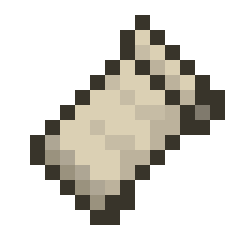
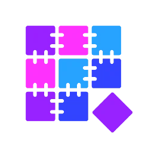

1
Откройте поиск модов
В лаунчере найдите Modrinth или CurseForge и введите название.
Ставьте моды из Modrinth и CurseForge прямо в VMcraft: Fabric, Quilt, Forge, NeoForge и .mrpack-сборки.

Fabric
QuiltВ лаунчере найдите Modrinth или CurseForge и введите название.
Создайте профиль Fabric, Quilt, Forge или NeoForge под нужную версию игры.
Импортируйте .mrpack или zip — VMcraft сам скачает моды и создаст профиль.